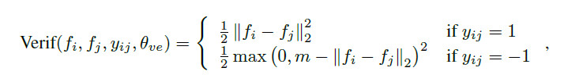

小喵的唠叨话：我们在上一篇博客里面，介绍了Caffe的Data层的编写。有了Data层，下一步则是如何去使用生成好的训练数据。也就是这一篇的内容。
二、精髓，DeepID2 Loss层
DeepID2这篇论文关于verification signal的部分，给出了一个用于监督verification的loss。

其中，\(f_i\) 和 \(f_j\) 是归一化之后的特征。
当 \(f_i\) 和\(f_j\) 属于同一个identity的时候，也就是 \(y_{ij}=1\) 时，loss是二者的L2距离，约束使得特征更为相近。
当 \(f_i\) 和 \(f_j\) 不属于同一个identity的时候，即 \(y_{ij}=-1\) ，这时的loss表示什么呢？参数m又表示什么？
m在这里是margin的意思，是一个可以自行设置的参数，表示期望的不同identity的feature之间的距离。当两个feature的大于margin时，说明网络已经可以很好的区分这两个特征，因此这是loss为0，当feature间的距离小于margin时，loss则为\((m-|f_i - f_j|)^2\)，表示还需要两个特征能够更好的区分。因此这个loss函数比较好的反应了我们的需求，也就是DeepID2的算法思想。
这个Loss层实现起来似乎并不麻烦，前馈十分的简单。至于后馈，求导也非常简单。但是Caffe加入新层，需要在caffe.proto文件中，做一些修改，这也是最困扰小喵的地方。
不过有个好消息就是：Caffe官网增加了ContrastiveLossLayer这个层！和我们的需要是一样的。因此我们不需要自己实现这个层。
喜大普奔之余，小喵也专门看了Caffe的文档，以及这里提到了siamese network，发现这个网络使用ContrastiveLossLayer的方式比较独特，Caffe项目中的examples中有例子，感兴趣可以看看。
ContrastiveLossLayer的输入，也就是bottom有三部分，feature1、feature2、label，feature1和feature2是分别对应的两组feature，而label则表示该对feature是否是属于同一个identity，是的话，则为1，不是则为0。而且该层还提供一个参数margin，也就是论文的公式里面的m。
最终的结论就是，虽然我们不需要自己写Loss层，但是还是必须增加一些额外的层。
主要有2个，用于将特征归一化的NormalizationLayer以及用于将feature层转换成ContrastiveLossLayer的输入的层，不妨命名为ID2SliceLayer。
三、小问题，大智慧之Normalization Layer
这个归一化的层用于将输入的feature map进行归一化。Caffe官网并没有提供相关的层，因此我们必须自己实现（或者从网上找），这里我们还是选择自己来实现，顺便学习一下Caffe加层的技巧。
Normalization层的前馈非常的简单，输入为一个向量x，输出为归一化之后的向量：
\[f(\vec x)=\frac{\vec x}{\left\| \vec x \right \|}\]
至于后馈，需要求导，计算稍微有点复杂，小喵在推导4遍之后才给出如下表达式：
\[\frac{\partial \vec f}{\partial \vec x}=-\frac{1}{\left\| \vec x \right\|}*{\vec x}*{\vec x^T}+\frac{1}{\left\| \vec x \right\|}\]
其中x为输入的特征向量，为列向量。这里是将整个feature map看做一个列向量。
知道了前馈后馈的计算规则，那么很容易编写自己的层了，这里小喵建议大家找个Caffe已经有了的内容相近的层，照着改写。比如这个Normalization层，没有任何层的参数，所以照着ReLU类似的层就很好编写。
之后就祭出我们的code：
// create by miao
// 主要实现了feature的归一化
#ifndef CAFFE_NORMALIZATION_LAYER_HPP_
#define CAFFE_NORMALIZATION_LAYER_HPP_
#include <vector>
#include "caffe/blob.hpp"
#include "caffe/layer.hpp"
#include "caffe/proto/caffe.pb.h"
#include "caffe/layers/neuron_layer.hpp"
namespace caffe {
template <typename Dtype>
class NormalizationLayer : public NeuronLayer<Dtype> {
public:
explicit NormalizationLayer(const LayerParameter& param)
: NeuronLayer<Dtype>(param) {}
virtual void LayerSetUp(const vector<Blob<Dtype>*>& bottom,
const vector<Blob<Dtype>*>& top);
virtual inline const char* type() const { return "Normalization"; }
virtual inline int ExactNumBottomBlobs() const { return 1; }
virtual inline int ExactNumTopBlobs() const { return 1; }
protected:
virtual void Forward_cpu(const vector<Blob<Dtype>*>& bottom,
const vector<Blob<Dtype>*>& top);
virtual void Forward_gpu(const vector<Blob<Dtype>*>& bottom,
const vector<Blob<Dtype>*>& top);
virtual void Backward_cpu(const vector<Blob<Dtype>*>& top,
const vector<bool>& propagate_down, const vector<Blob<Dtype>*>& bottom);
virtual void Backward_gpu(const vector<Blob<Dtype>*>& top,
const vector<bool>& propagate_down, const vector<Blob<Dtype>*>& bottom);
Blob<Dtype> norm_val_; // 记录每个feature的模
};
} // namespace caffe
#endif // CAFFE_NORMALIZATION_LAYER_HPP_这个层的头文件异常的简单，和ReLU的仅有的区别就是类的名字不一样，而且多了个成员变量norm_val_，用来记录每个feature的模值。
// create by miao
#include <vector>
#include <cmath>
#include "caffe/layers/normalization_layer.hpp"
#include "caffe/util/math_functions.hpp"
namespace caffe {
template <typename Dtype>
void NormalizationLayer<Dtype>::LayerSetUp(const vector<Blob<Dtype>*>& bottom,
const vector<Blob<Dtype>*>& top) {
NeuronLayer<Dtype>::LayerSetUp(bottom, top);
CHECK_NE(top[0], bottom[0]) << this->type() << " Layer does not "
"allow in-place computation.";
norm_val_.Reshape(bottom[0]->shape(0), 1, 1, 1); // 申请norm的内存
}
template <typename Dtype>
void NormalizationLayer<Dtype>::Forward_cpu(
const vector<Blob<Dtype>*>& bottom, const vector<Blob<Dtype>*>& top) {
Dtype *norm_val_cpu_data = norm_val_.mutable_cpu_data();
for (int n = 0; n < bottom[0]->shape(0); ++ n) {
// 计算每个c * h * w的区域的模
norm_val_cpu_data[n] = std::sqrt(static_cast<float>(
caffe_cpu_dot<Dtype>(
bottom[0]->count(1),
bottom[0]->cpu_data() + bottom[0]->offset(n),
bottom[0]->cpu_data() + bottom[0]->offset(n)
)
));
// 将每个bottom归一化，输出到top
caffe_cpu_scale<Dtype>(
top[0]->count(1),
1. / norm_val_cpu_data[n],
bottom[0]->cpu_data() + bottom[0]->offset(n),
top[0]->mutable_cpu_data() + top[0]->offset(n)
);
}
}
template <typename Dtype>
void NormalizationLayer<Dtype>::Backward_cpu(
const vector<Blob<Dtype>*>& top,
const vector<bool>& propagate_down,
const vector<Blob<Dtype>*>& bottom) {
const Dtype *norm_val_cpu_data = norm_val_.cpu_data();
const Dtype *top_diff = top[0]->cpu_diff();
Dtype *bottom_diff = bottom[0]->mutable_cpu_diff();
const Dtype *bottom_data = bottom[0]->cpu_data();
caffe_copy(top[0]->count(), top_diff, bottom_diff);
for (int n = 0; n < top[0]->shape(0); ++ n) {
Dtype a = - 1./(norm_val_cpu_data[n] * norm_val_cpu_data[n] * norm_val_cpu_data[n]) * caffe_cpu_dot<Dtype>(
top[0]->count(1),
top_diff + top[0]->offset(n),
bottom_data + bottom[0]->offset(n)
);
Dtype b = 1. / norm_val_cpu_data[n];
caffe_cpu_axpby<Dtype>(
top[0]->count(1),
a,
bottom_data + bottom[0]->offset(n),
b,
bottom_diff + top[0]->offset(n)
);
}
}
#ifdef CPU_ONLY
STUB_GPU(NormalizationLayer);
#endif
INSTANTIATE_CLASS(NormalizationLayer);
REGISTER_LAYER_CLASS(Normalization);
} // namespace caffe最后就是GPU部分的代码，如果不在乎性能的话，直接在CUDA的前后馈里面调用CPU版的前后馈就行。当然如果了解CUDA的话，完全可以写一份GPU版的代码。小喵这里就偷懒了一下。。。
// create by miao
#include <vector>
#include <cmath>
#include "caffe/layers/normalization_layer.hpp"
#include "caffe/util/math_functions.hpp"
namespace caffe {
template <typename Dtype>
void NormalizationLayer<Dtype>::Forward_gpu(
const vector<Blob<Dtype>*>& bottom, const vector<Blob<Dtype>*>& top) {
this->Forward_cpu(bottom, top);
}
template <typename Dtype>
void NormalizationLayer<Dtype>::Backward_gpu(
const vector<Blob<Dtype>*>& top,
const vector<bool>& propagate_down,
const vector<Blob<Dtype>*>& bottom) {
this->Backward_cpu(top, propagate_down, bottom);
}
INSTANTIATE_LAYER_GPU_FUNCS(NormalizationLayer);
} // namespace caffe这样，我们就写完了Normalization层的所有代码。
对于比较老版本的Caffe，还需要修改/caffe_root/src/caffe/caffe.proto文件。而新版的Caffe只要在新增参数的情况下才需要修改。我们的这个Normalization层并没有用到新的参数，因此并不需要修改caffe.proto文件。
至于新版的Caffe为什么这么智能，原因其实就在这两行代码：
INSTANTIATE_CLASS(NormalizationLayer);
REGISTER_LAYER_CLASS(Normalization);宏INSTANTIATE_CLASS在/caffe_root/include/caffe/common.hpp中定义。
宏REGISTER_LAYER_CLASS在/caffe_root/include/caffe/layer_factory.hpp中定义。
感兴趣可以自行查阅。
重要更新: 小喵最近训练的时候实际上已经不使用Normalization层了，而是将Contrastive Loss直接接在feature层的后面，同时由于训练数据都是正样本对，那么margin就没有意义了。不过比较麻烦的是loss weight的选取。
转载请注明出处~